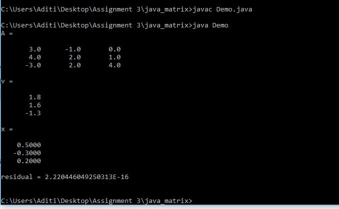

import Jama.*;
/** Example of use of Matrix Class **/
public class Demo{
/** Shorten spelling of print. **/
private static void print (String s) {
System.out.println(s);
}
public static void main (String args[]) {
double a[][] = { {3, -1, 0}, {4, 2, 1}, {-3, 2, 4} };
double z[][] = { {1.8}, {1.6}, {-1.3}};
Matrix A = new Matrix(a);
print("A = ");
A.print(8,1);
Matrix v = new Matrix(z);
print("v = ");
v.print(8,1);
Matrix x = A.solve(v);
print("x = ");
x.print(8,4);
Matrix Residual = A.times(x).minus(v);
double rnorm = Residual.normInf();
print("residual = " + rnorm + "\n");
}
}
OUTPUT
